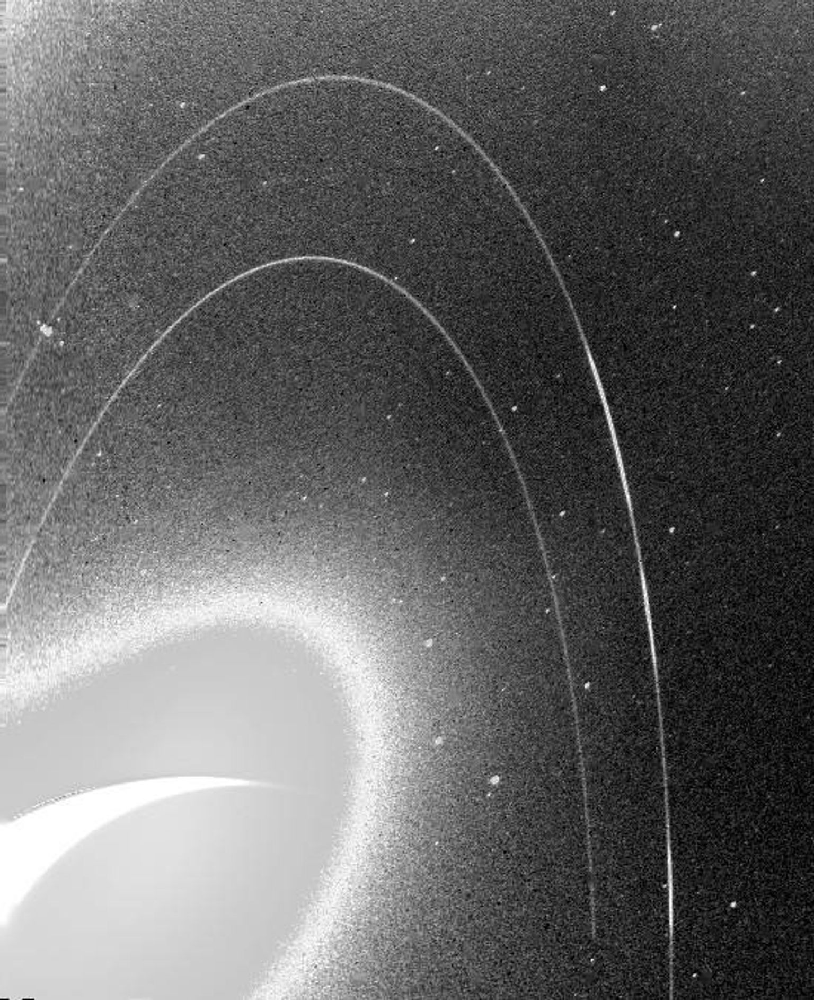

Yaşam potansiyeli
Neptün'ün çevresi bildiğimiz şekliyle yaşama elverişli değildir. Bu gezegeni karakterize eden sıcaklıklar, basınçlar ve malzemeler büyük ihtimalle çok aşırı ve organizmaların uyum sağlayabileceği kadar değişkendir.
Karanlık, soğuk ve süpersonik rüzgarlarla kamçılanan buz devi Neptün, Güneş'e Dünya'dan 30 kat daha uzaktır. Neptün, güneş sistemimizde çıplak gözle görülemeyen tek gezegendir. 2011'de Neptün, 1846'da keşfedilmesinden bu yana ilk 165 yıllık yörüngesini tamamladı. Neptün Güneş'ten o kadar uzaktadır ki büyük mavi gezegende öğle vakti bize loş bir alacakaranlık gibi görünür. Burada ev gezegenimizde gördüğümüz sıcak ışık, Neptün'deki güneş ışığından yaklaşık 900 kat daha parlaktır.Buz devi Neptün, matematiksel hesaplamalarla bulunan ilk gezegendi. Urbain Le Verrier'in tahminlerini kullanan Johann Galle, gezegeni 1846'da keşfetti. Gezegen, Le Verrier'in önerdiği gibi, Roma deniz tanrısından adını almıştır. ayrtıntılı bilgi için tıklayın
Neptün'ün çevresi bildiğimiz şekliyle yaşama elverişli değildir. Bu gezegeni karakterize eden sıcaklıklar, basınçlar ve malzemeler büyük ihtimalle çok aşırı ve organizmaların uyum sağlayabileceği kadar değişkendir.
Ekvator çapı 30.775 mil (49.528 kilometre) olan Neptün, Dünya'dan yaklaşık dört kat daha geniştir. Dünya bir nikel büyüklüğünde olsaydı, Neptün yaklaşık olarak bir beyzbol topu kadar büyük olurdu. Ortalama 2,8 milyar mil (4,5 milyar kilometre) mesafeden Neptün, Güneş'ten 30 astronomik birim uzaklıktadır. Bir astronomik birim (AU olarak kısaltılır), Güneş'ten Dünya'ya olan mesafedir. Bu mesafeden, Güneş'ten Neptün'e güneş ışığının ulaşması 4 saat sürer.
Neptün'de bir gün yaklaşık 16 saat sürer (Neptün'ün bir kez dönmesi veya dönmesi için gereken süre). Ve Neptün Güneş etrafındaki tam bir yörüngeyi (Neptün zamanına göre bir yıl) yaklaşık 165 Dünya yılında (60.190 Dünya günü) tamamlar. Bazen Neptün, cüce gezegen Plüton'dan bile Güneş'e daha uzaktır. Plüton'un son derece eksantrik, oval biçimli yörüngesi onu her 248 Dünya yılında 20 yıllık bir süre boyunca Neptün'ün yörüngesinin içine getirir. Plüton'un Güneş'e Neptün'den daha yakın olduğu bu geçiş en son 1979'dan 1999'a kadar gerçekleşti. Plüton asla Neptün'e çarpamaz, çünkü Neptün'ün Güneş etrafında her üç turunda Plüton iki tur atar. Bu tekrarlayan desen iki cismin birbirine yaklaşmasını engeller. Neptün'ün dönüş ekseni, Güneş etrafındaki yörüngesinin düzlemine göre 28 derece eğiktir, bu da Mars ve Dünya'nın eksen eğikliğine benzerdir. Bu, Neptün'ün tıpkı Dünya'da yaşadığımız gibi mevsimler yaşadığı anlamına gelir; ancak yılı çok uzun olduğundan, dört mevsimin her biri 40 yıldan fazla sürer.

Neptün'ün bilinen 16 uydusu vardır. Neptün'ün en büyük uydusu Triton, Johann Gottfried Galle'nin gezegeni keşfetmesinden sadece 17 gün sonra, 10 Ekim 1846'da William Lassell tarafından keşfedildi. Neptün, adını Roma deniz tanrısından aldığı için uyduları da Yunan mitolojisindeki çeşitli küçük deniz tanrıları ve perilerinden almıştır. Triton, gezegeninin dönüşünün tersi yönde (geriye doğru bir yörünge) gezegeninin etrafında dönen güneş sistemindeki tek büyük uydudur; bu da bir zamanlar Neptün'ün yakaladığı bağımsız bir nesne olabileceğini düşündürmektedir. Triton aşırı soğuktur ve yüzey sıcaklıkları yaklaşık eksi 391 derece Fahrenheit'tır (eksi 235 derece Santigrat). Yine de, Triton'daki bu derin donmaya rağmen, Voyager 2, buzlu maddeyi 5 milden (8 kilometre) daha yükseğe püskürten gayzerler keşfetti. Voyager tarafından keşfedilen Triton'un ince atmosferi, o zamandan beri Dünya'dan birkaç kez tespit edildi ve ısınıyor, ancak bilim insanları henüz nedenini bilmiyor.
Neptün'ün şimdiye kadar bildiğimiz en az beş ana halkası ve dört belirgin halka yayı vardır. Gezegenin yakınından başlayıp dışarıya doğru hareket eden ana halkalar Galle, Leverrier, Lassell, Arago ve Adams olarak adlandırılır. Halkaların nispeten genç ve kısa ömürlü olduğu düşünülmektedir.
Neptün'ün atmosferi çoğunlukla hidrojen ve helyumdan oluşurken, çok az miktarda metandan oluşur. Neptün'ün komşusu Uranüs'ün de benzer bir yapısı vardır; metan diğer renkleri emer ancak maviyi yansıtır ve bu buz devlerine benzer bir ton verir. 1989'da Voyager 2'nin yakın geçişinden gelen birçok Neptün görüntüsü, Neptün'ü çok daha koyu mavi olarak göstermektedir. Bunun nedeni, Voyager ekibinin, Voyager 2'nin 1986'da yakaladığı Uranüs'ün puslu ve tekdüze görüntüsüne kıyasla, gezegendeki bulutları ve diğer belirgin özellikleri daha iyi ortaya çıkarmak için görüntüleri ayarlamasıdır. 2024'te araştırmacılar görüntüleri yeniden işlediler ve gezegenlerin birçok kişinin düşündüğünden çok daha fazla benzediğini gösterdiler. Neptün, güneş sistemimizin en rüzgarlı dünyasıdır. Güneş'ten büyük uzaklığına ve düşük enerji girişine rağmen, Neptün'ün rüzgarları Jüpiter'inkinden üç kat ve Dünya'nınkinden dokuz kat daha güçlü olabilir. Bu rüzgarlar, saatte 1.200 milden (saatte 2.000 kilometre) daha yüksek hızlarda gezegenin üzerinde donmuş metan bulutlarını savurur. Dünya'nın en güçlü rüzgarları bile sadece saatte yaklaşık 250 mil (saatte 400 kilometre) hızla vurur. 1989'da Neptün'ün güney yarımküresinde "Büyük Karanlık Nokta" olarak adlandırılan büyük, oval biçimli bir fırtına tüm Dünya'yı içine alabilecek kadar büyüktü. O fırtına o zamandan beri ortadan kalktı, ancak gezegenin farklı yerlerinde yenileri belirdi.